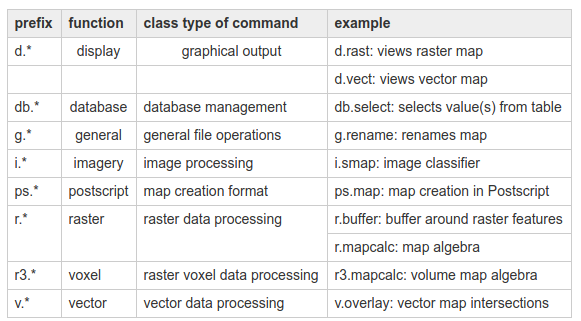

GRASS Introduction¶
The object of this page is to start using GRASS and to get familiar with some general GIS operations. We are going to use a command line approach. This is to enable carrying out stand-alone processes in the future, and understand step by step each function and the options per function which are available. Let´s start using GRASS.
We suggest to copy-paste the following command line directly in the bash terminal.
Considering that GRASS can not working properly under /media/sf_LVM_shared/my_SE_data/ we create a working copy of the SE_data:
mkdir -p /home/user/my_SE_data/exercise
cp -r /home/user/SE_data/exercise/grassdb /home/user/my_SE_data/exercise
conda deactivate
Starting GRASS
Every GRASS project has a predefined data structure:
GISDBASE - GRASS data are stored in a directory referred to as a DATABASE “GISDBASE”. This directory has to be created with mkdir or a file manager, before starting to work with GRASS. Within this DATABASE, the projects are organized by project areas stored in subdirectories called LOCATIONs.
LOCATION - A Location is defined by its coordinate system, map projection and geographical boundaries. The subdirectories and files defining a LOCATION are created automatically when GRASS is started for the first time with a new LOCATION.
MAPSET - Locations can have many MAPSETs. Each MAPSET is a LOCATION’s subdirectory. A new MAPSET can be added at GRASS startup.
A common problem of basic users is not really using GRASS but starting a GRASS section. The main reason is due to the GRASS data structure and the way a GRASS section has to be set up before starting!
There are several two ways to use and open GRASS:
Start GRASS by GUI
grass76 -wxpython
cp -r /home/user/SE_data/exercise/grassdb /home/user/my_SE_data/exercise The Graphical User Interface GUI will ask you to define the GISDBASE, LOCATION and MAPSET to use. If you want you can select the Location wizard to create a new location with newest projection parameters or the Create mapset button to create a new mapset inside a pre-existing location.
Start GRASS by command line
grass76 -text /home/user/my_SE_data/exercise/grassdb/europe/PERMANENT/
Once you are running GRASS through the bash shell terminal you can always start the graphical user interface with:
g.gui wxpython &
GRASS command structure

For detailed instructions on GRASS command syntax and use, go to the GRASS online manual or type man and function name. As an example
man r.info
GRASS working environment
The g.gisenv command informs you of your current GRASS environment settings
g.gisenv
If you started GRASS correctly you should visualize the following lines on your terminal
GISDBASE=/home/user/my_SE_data/exercise/grassdb
LOCATION_NAME=europe
GRASS_GUI=wxpython
GUI=text
PID=2790
MAPSET=PERMANENT
GRASS 7.6.1 (europe):~ >
Running GRASS through the bash shell terminal allows you to use all command line functionality of both GRASS and shell. As an example you can type:
ls
and visualize all files available in your shell current working directory. This means that all your output files produced by bash command lines functionality will be saved in the current working directory (if not specified differently). Many non-geographical GRASS output features such as text file reports or images will be saved as well in the current working directory.
The GRASS 7.6.1 (europe):~ >
inform you are currently working in the home folder. See
pwd
for double checking the same information using a bash command instead of the GRASS
g.gisenv
command.
It is a good working habit within GRASS to set bash shell working directory the same as your GRASS LOCATION folder.
cd /home/user/my_SE_data/exercise/grassdb
On the terminal you will no longer see
GRASS 7.6.1 (europe):~ >
but
GRASS 7.6.1 (europe):/home/user/my_SE_data/exercise/grassdb:~ >
and you will be aware tif your current bash shell working directory match your GRASS location directory.
GRASS MAPSET
We have explained that GRASS projects can be organised in MAPSETs by users, by themes, by extent or locations, and grouped within the same GRASS LOCATION. This LOCATION will group several MAPSETS defined by a common projection and is able to access a common set of maps in the PERMANENT MAPSET forlder. When we work in a specific MAPSET we will have no rights to write or delete maps in a different MAPSET. For doing so you will have to change your working MAPSET directory and then delete or produce new maps.
The g.mapset command allows you to change the GRASS working directory and successively generate, delete or modify maps as you wish.
g.mapset -l
g.mapset mapset=PCEM
g.gisenv
Now you should see the following settings:
GRASS 7.6.1 (europe):/home/user/my_SE_data/exercise/grassdb >
g.gisenv
GISDBASE=/home/user/my_SE_data/exercise/grassdb
LOCATION_NAME=europe
GRASS_GUI=wxpython
GUI=text
PID=2790
MAPSET=PCEM
GRASS 7.6.1 (europe):~ >
Manage MAPSET
To list your available maps:
g.list type=vect -p
g.list vect -p
g.list rast -p
The user can add, modify, and delete data layers that exist under his current mapset. Although the user can also access (i.e., use) data that are stored under other mapsets in the same GRASS location, the user can only make permanent changes (create or modify data) located in the current mapset.
Now we can access the fnfpc_crop mapset and eventually copy a map from the PCEMstat mapset to our current mapset directory using the g.copy function:
g.copy rast=fnfpc_crop@PCEMstat,fnfpc_crop
g.list rast -p
And delete a map with the g.remove command
g.remove -f type=rast name=fnfpc_crop
g.list rast
You can access but not delete or modify a map in a different mapset from your current
g.remove -f type=rast name=fnfpc_crop@PCEMstat
We have to be careful in GRASS to understand the possible differences existing in the same MAPSET between the whole extent and resolution of the MAPSET itself, the extent, resolution and geographic location of our working region, and the extent and location of what we are visualising.
Region settings In GRASS, a region refers to a geographic area with some defined boundaries, based on a specific map coordinate system and map projection. Grass region definition and details. This crucial GRASS setting will allow us to define within MAPSET settings a particular region of work. Once defined the GRASS region, GRASS modules (or programs) will operate within this region. The user can create, modify, and store as many geographic region definitions as desired for any given mapset. However, only one of these geographic region definitions will be current at any given moment, for a specified mapset. GRASS programs that respect the geographic region settings will use the current geographic region settings.
To query your current region settings type
g.region -p
and to reset region settings to their original extent type
g.region -d
-p stands for “print” ; -d stands for default You can modify your default g. region with a -s flag within the PERMANENT directory.
Now we will define a new study area for the Scandinavia region.
g.region -p
g.region n=6015390 e=5676400 s=3303955 w=3876180 res=1000 save=scandinavia --overwrite
g.region -p
You will visualize the current and newest region settings saved as scandinavia.
If you open the GRASS gui
g.gui wxpython
You can visualize the Computational Region in the Display menu by cliking “Show computation Extent” and you will see the Scandinavia area within a red frame.
Back to GRASS if you reset the default GRASS region
g.region -d
Clipping maps and changing resolution use g.region allow us to do two basic GIS function: resample and clip. We would like to have 3 new maps of forest/non-forest percentage clipped and resampled with a different resolution from a forest/non-forest map. The original forest/non-forest map has the European extent and 1km resolution. We need to generate:
Italian extent map at 20km resolution,
Alpine extent map at 10km resolution
Alpine and Carpathians extent map at 5km reslution.
In the europe LOCATION different g.region exists:
ls PERMANENT/windows/
ls */windows/
The g.region are saved in the following folders and named as follow:
EUforest/windows/: europe
PCEMstat/windows/: alpine
PCEM/windows/: alp_car
PERMANENT/windows/: scandinavia
We now resample the g.region at 20km using the res=new_res option and will set 75 x 57 pixels of 20k resolution
g.region res=20000 -p
projection: 99 (Lambert Azimuthal Equal Area)
zone: 0
datum: ** unknown (default: WGS84) **
ellipsoid: grs80
north: 2900000
south: 1400000
west: 3960000
east: 5100000
nsres: 20000
ewres: 20000
rows: 75
cols: 57
cells: 4275
we can create a new forest/non-forest map with the new extent and resolution using
r.mapcalc function r.mapcalc details
r.mapcalc "fnfpc_italy20k = fnfpc"
Now create the two other maps:
g.region alpine@PCEMstat res=10000 -p
projection: 99 (Lambert Azimuthal Equal Area)
zone: 0
datum: ** unknown (default: WGS84) **
ellipsoid: grs80
north: 2751000
south: 2310000
west: 3960000
east: 4700000
nsres: 10022.72727273
ewres: 10000
rows: 44
cols: 74
cells: 3256
r.mapcalc "fnfpc_alpine10k = fnfpc"
g.region alp_car@PCEM res=5000 -p
projection: 99 (Lambert Azimuthal Equal Area)
zone: 0
datum: ** unknown (default: WGS84) **
ellipsoid: grs80
north: 3070000
south: 2270000
west: 3900000
east: 5660000
nsres: 5000
ewres: 5000
rows: 160
cols: 352
cells: 56320
r.mapcalc "fnfpc_alpine_carpatien5k = fnfpc"
You can save a new extent and resolution as g.mapset with the save=namenew option
g.region alp_car@PCEM res=5000 -p save=alp_car_5km_res